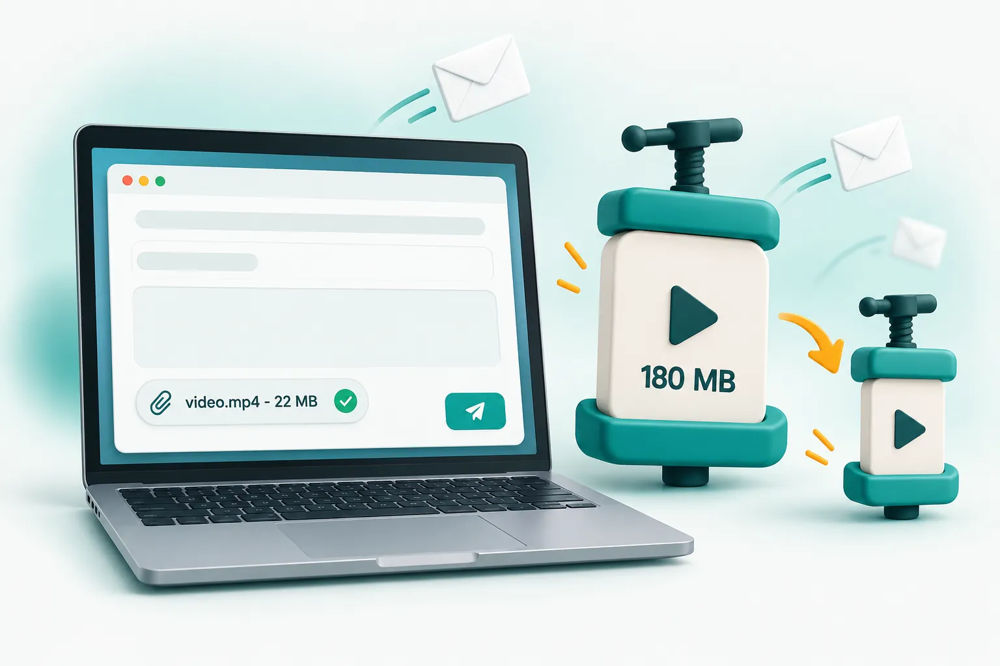

Blog / Email
How to send a large video by email.

Gmail allows 25 MB of attachments per email and Outlook usually 20 MB. To attach a video directly, compress it to just under the limit (aim for 22 MB for Gmail, 18 MB for Outlook). If the video is several minutes long, use a cloud link such as Google Drive, OneDrive or iCloud Mail Drop instead.
Email attachment limits by provider
| Email service | Attachment limit | What happens above it |
|---|---|---|
| Gmail | 25 MB | The file is uploaded to Google Drive and sent as a link |
| Outlook.com / Microsoft 365 | Usually 20 MB | Outlook offers to share it from OneDrive instead |
| Yahoo Mail | 25 MB | Large files are offered as a cloud link |
| iCloud Mail | 20 MB (Mail Drop up to 5 GB) | Mail Drop sends a download link that expires after 30 days |
These limits apply to the whole email, not each file. If you are also attaching a PDF or photos, the video needs to be smaller still. Many company mail servers also set their own lower limits, and some measure the encoded size of the message, which is a little larger than the file itself. Leaving 10 to 15 percent headroom avoids bounced emails.
Why not just send a Drive or OneDrive link?
Links work, but they are not always the best option. The recipient may need to sign in, request access or open a different app. Support desks, insurers and ticket systems often strip links or only accept real attachments. A video attached directly also stays with the email forever, whereas shared links can expire or be deleted.
How to make a video small enough to attach
- Open the email video compressor.
- Add your video file (MP4, MOV, WebM and most phone formats work).
- Choose Gmail attachment (under 25 MB) or Outlook attachment (under 20 MB). If you are sending other files too, choose Custom size and enter a smaller number.
- Click Compress videos and wait a few seconds to a minute, depending on the length.
- Download the compressed MP4 and attach it to your email.
The tool checks the final size and automatically re-tunes if the first attempt lands slightly over your limit, so the file you download is guaranteed to fit. The output is a standard MP4 that opens on Windows, Mac, iPhone and Android without extra apps.
How much video fits in 25 MB?
- Up to about 1.5 minutes at 1080p with good quality.
- About 2 to 4 minutes at 720p, which is plenty for most recipients.
- Longer recordings such as presentations, screen recordings or talking-head videos can run longer at 480p because there is little movement.
Sending videos to support teams and insurers
A short video of a fault or damage is often the fastest way to get a claim or repair approved. Help desks commonly reject attachments over 10 to 20 MB, so compress to under 10 MB with the Custom size option if the support page mentions a lower limit. Keep the clip short and focused: show the problem clearly for 20 to 30 seconds rather than sending several minutes of footage.
When the video is simply too long
A 20-minute recording will not fit in 25 MB with acceptable quality. In that case, upload it to Google Drive, OneDrive or Dropbox and send the link, or use iCloud Mail Drop on an Apple device. You can still compress it first to make the upload faster and save storage.
Frequently asked questions
What is the maximum video size for Gmail?
Gmail allows up to 25 MB of attachments per email. Anything larger is automatically uploaded to Google Drive and sent as a link.
How do I email a video that is too large?
Compress it to just under the limit (around 22 MB for Gmail or 18 MB for Outlook) or share it through a cloud link such as Google Drive, OneDrive or iCloud Mail Drop.
Does compressing a video for email reduce quality?
A little, but with sensible settings most people will not notice on a phone or laptop screen. Lowering the resolution to 720p for longer videos keeps the picture clean.